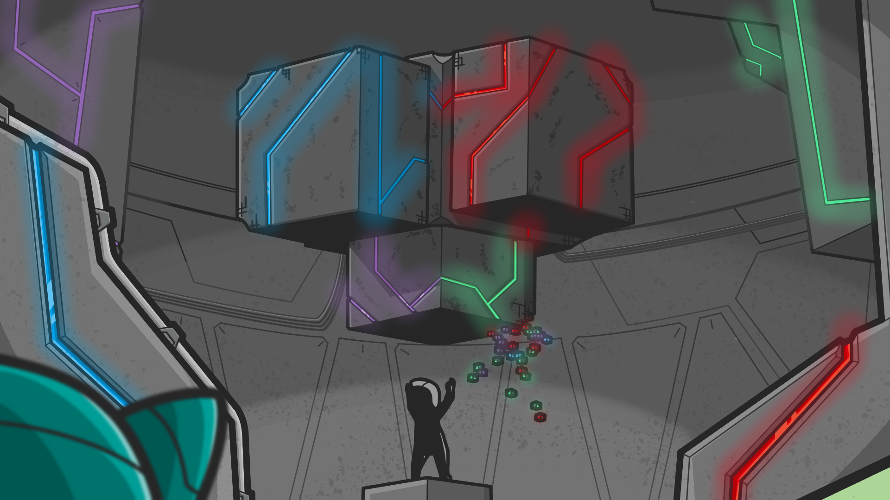

"As The Precursors built The Lode from the very first Power Blocks, they were caught by surprise.."
"The Lode had gained sentience faster than they had expected. Worse yet, it was angry."
"The Lode understood it was being harnessed for its power and was not willing to resign its freedom so easily."
"Instead of giving up power to the precursors alone, The Lode wanted its own subjects."
"A contract was proposed:
The Sentries Covenant."
"According to The Covenant, the precursors would serve The Lode and ensure its physical integrity."
"In return, The Lode would create a host of androids, The Sentries, to assist with the operation and expansion of Decentral City."